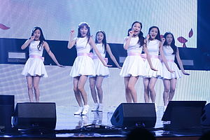

April is a South Korean girl group formed by DSP Media.
The group debuted on August 24, 2015, with their EP Dreaming and its title
track "Dream Candy".
The group is composed of six members: Chaekyung, Chaewon, Naeun, Yena, Rachel and Jinsol.
2015: Debut and Somin's departure April during their first official performance on August 25, 2015, on The Show April's formation was first announced by DSP Media on February 9, 2015, following their previous girl groups Fin.K.L, Kara and Rainbow. The six-member group (Somin, Chaewon, Hyunjoo, Naeun, Yena, and Jinsol) debuted on August 24 with the EP Dreaming and the title track "Dream Candy" On November 9, the group's leader, Somin, announced her departure from the group, admitting she was uncomfortable with the concept the group would pursue. The remaining five members released the single album Boing Boing, including the title track "Muah!" and the B-side "Glass Castle" on November 25. It was followed by a Christmas special album titled Snowman, released on December 21.
2016: Spring and line-up changes
On February 12, 2016, DSP Media announced that the group's fan club name was "Fineapple". On February 14, the group hold a mini-concert titled "Everland Romantic Concert" for Valentine's Day. On February 18, April won the Girl Group Rookie of the Year award at the 22nd Korean Entertainment Arts Awards.
On March 6, the group held their first Japanese fan-meeting titled "April JAPAN FANMEETING 2016 The First Fairy tale" to 2,000 fans. The event was presented by Heo Young-ji. A mini-fanmeeting of similar concept was also held in Seoul, on February 27, with 500 fans.
April performing a few days prior to the release of Spring
The group's second EP, Spring, was released on April 27. It contains six tracks including the lead single, "Tinkerbell". During promotions for Spring, Hyunjoo took a temporary hiatus from the group due to health issues, and April promoted as a four-member group.
On July 2, April appeared as guest at Heo Young-ji's Japanese fan-meeting "YOUNGJI FANMEETING 2016 Nice to see U".
On August 21, the group held their first solo concert, titled Dream Land, at the Baek Am Art Hall in Seoul, to celebrate their first anniversary. Another concert was held in Tokyo, Japan, on October 15. Yoon Chae-kyung also participated in both concerts as a guest member.
On October 29, Hyunjoo announced her official departure from April, following a seven-month hiatus, in order to pursue an acting career. The four remaining members of the group (Chaewon, Naeun, Yena, and Jinsol) would continue with the addition of new group members confirmed in November: Chaekyung, who had previously appeared as a guest member, and Rachel.
2017: Prelude, Mayday and Eternity
APRIL during a fan-sign, on January 15, 2017
April released their third EP Prelude as a six-member group on January 3, 2017, with the title track "April Story". The group also held their comeback showcase performance for Prelude on the same day. On February 14, they performed a cover of Apink's "Luv" for the 100th episode of The Show. From February 16, they also performed on M Countdown with the track "Wow". On February 26, they released "So You" as a digital single. On March 20, April held their second Japanese fan-meeting titled "#April JAPAN FANMEETING 2017～April Story" at Shinagawa Intercity Hall, Tokyo.
On April 4, they released the tennis-court-themed music video for the single "Sting", through the first episode of their reality program A-IF-Ril. The program aired for five episodes. On May 8, the group's second reality program of the year, April Secret, began airing on Naver TV.
On May 29, April released their second single album, Mayday. The music video for "Sting" was re-released under the title "Lovesick", along with the title track "Mayday". They performed "Lovesick" on M Countdown on June 22.
On September 20, their fourth EP Eternity was released along with the title track "Take My Hand" .
On October 18, it was announced that the group will hold their second Japanese solo concert titled "APRIL 2nd LIVE CONCERT IN JAPAN 2017 「DREAM LAND」 (Take My Hand)" on December 10, 2017. The group also performed a concert in Korea on Christmas Day titled "2017 SPECIAL CHRISTMAS APRIL EVE".
2018: The Blue, Japanese debut and The Ruby
April on the way to Music Bank, on March 18, 2018.
On January 30, 2018, DSP Media through the group's Twitter revealed the upcoming secret single set to release for February 7. On January 31, the agency revealed that the single was to be part of a special unit album. On February 1, it was revealed that the upcoming subunit consisting of members Jinsol and Naeun would release a song "My Story".
On March 22, DSP Media announced that April was set to make its Japanese debut sometime during the following month. The group made Japanese debut on April 25 with the releasing Japanese version of their 2016 single "Tinkerbell".[50] The single also contains the Japanese version of the b-side track "Yes, sir!" as well as the instrumental version of both songs. The single was promoted through TV shows appearances and a series of fan-meetings in various cities of Japan.
On February 26, 2018, DSP Media confirms that April's full group comeback was set for March 12, with the group's fifth EP The Blue along with the title track "The Blue Bird".
On September 17, the news outlet OSEN released an exclusive report about APRIL making a fall comeback. The reports were later confirmed by the group's youngest member Jinsol who revealed during an interview that the group was indeed preparing for a comeback. On October 4, DSP Media confirmed that the group would come back with their sixth EP The Ruby. The album was released on October 16, along with the title track "Oh! My Mistake".
2019-present: Japanese comeback and Da Capo
On January 16, 2019, April released the single "Oh-E-Oh (Japanese ver.)". In the same month, they released "Magic Dream" for the television drama My Strange Hero.
On March 11, 2020, DSP Media announced that April would postpone their March comeback to April 2020 amid the coronavirus concerns. On April 10, it was revealed that April would make a comeback with their 7th EP titled Da Capo on April 22. According to DSP Media, "Da Capo" is a musical term which means "from the beginning".
On April 10, it was revealed that April would make
a comeback with their 7th EP titled Da Capo on April 22. According to DSP Media,
"Da Capo" is a musical term which means "from the beginning". On April 22,
Da Capo and its title track "Lalalilala" were released. Da Capo peaked at
number five on the Gaon Album Chart, while "Lalalilala" peaked at number 40 on
the Gaon Digital Chart, becoming their highest charting releases to date.